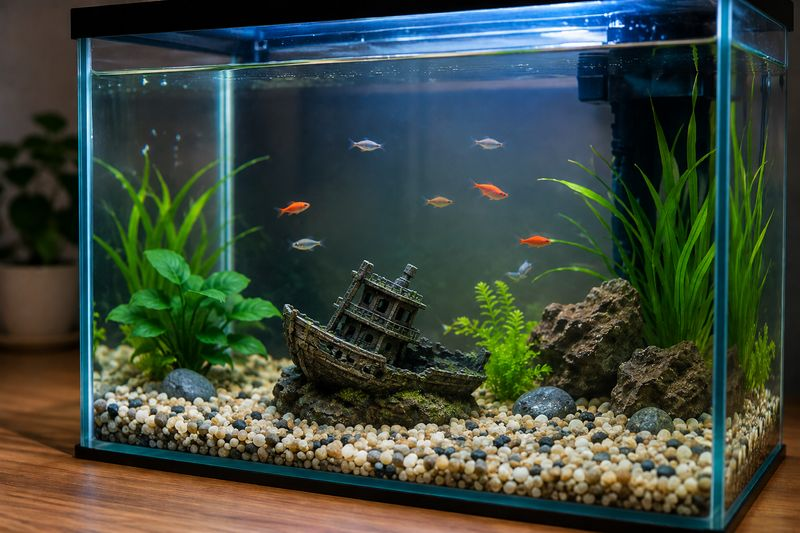

ארז קנה פסל של ספינה טרופה לאקווריום, ורצה למדוד את נפחו. הוא השתמש בשיטת ההצפה ומדד שלוש פעמים: 1,250 · 1,240 · 1,260 מ"ל. לפניכם 4 סעיפים — ענו על כולם, ובסוף תקבלו משוב. יש לענות נכון על 3 מתוך 4 כדי לסיים בהצלחה.

ארז הניח את האקווריום על כלי איסוף, מילא אותו במים עד הסוף והכניס פנימה את הפסל. את המים שנשפכו הוא אסף ומדד. באיזו שיטה ארז השתמש למדידת נפח הפסל?
ממוצע המדידות הוא 1,250 מ"ל. מהו נפח הפסל, ובאיזו יחידת מידה נוספת אפשר לבטא אותו?
אחותו של ארז טענה: "כמות המים שנאספה — 1,250 מ"ל — שווה בדיוק לנפח הפסל". איזה מהמשפטים נכון?
כדי לבסס את הטענה שנפח הפסל הוא 1,250 סמ"ק, יש לתמוך בה בטיעון מדעי. איזה מהמשפטים הוא טיעון מדעי הנתמך בראיה?
שלטתם בשיטות מדידת הנפח — דחיקת מים, הצפה, והמרות יחידות. עבודה מצוינת!
חלק מהסעיפים עדיין מאתגרים — כדאי לחזור עם המורה על שיטות מדידת הנפח ולתרגל שוב. אתם בדרך הנכונה!